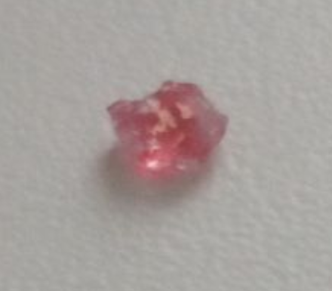

Class: +|-|-|-
Description: An abnormal crystal that sometimes turns red always falls in the snow regardless of temperature, even ice.
Conditions of storage: In a bag, in a safe.
Note: Use with caution, benefits have not yet been identified.

SEKT-001 At the time of discovery